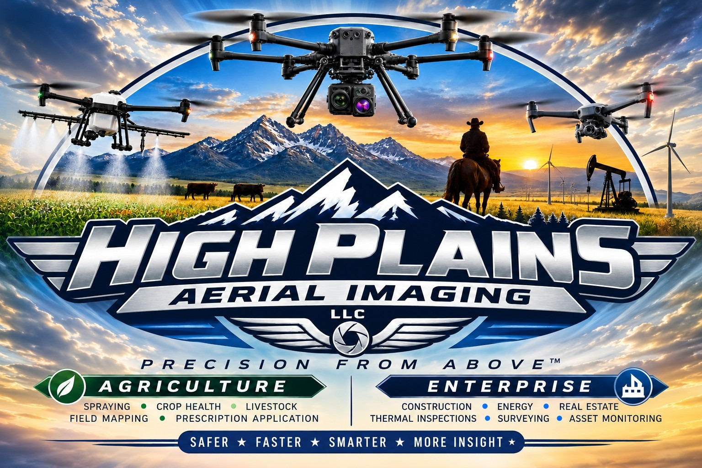

Agriculture & Drone Spraying
Precision aerial application, crop scouting, field imaging and livestock support designed for large Wyoming operations.
Explore agriculture →WYOMING • AGRICULTURE • ENTERPRISE
Professional drone imaging, inspections and aerial services for Wyoming agriculture, energy, construction, ranching, real estate and commercial operations.
AERIAL INTELLIGENCE
Capture the view, condition and measurements your project needs.

TWO SIDES OF THE BUSINESS
Choose the service path that fits your operation. Agriculture focuses on field and livestock applications, while Enterprise supports inspections, documentation, mapping and asset visibility.
AGRICULTURE
Crop health • Drone spraying • Field mapping • Prescription application • Livestock visibility
Explore Agriculture →ENTERPRISE
Oil & gas • Construction • Thermal • Mapping • Real estate • Asset monitoring
Explore Enterprise →OUR SERVICES
Precision aerial application, crop scouting, field imaging and livestock support designed for large Wyoming operations.
Explore agriculture →Pipeline, facility and infrastructure inspection with high-resolution visual and thermal imaging to help identify issues earlier.
Explore oil & gas →Document progress, inspect hard-to-reach areas, measure site materials and maintain a clear visual record from above.
Explore construction →Non-contact thermal imaging helps locate heat anomalies, equipment concerns, potential leaks and areas requiring closer inspection.
Explore thermal →Orthomosaics, 3D models, site mapping and aerial documentation that turn field imagery into useful project information.
Explore mapping →Large-acreage observation, livestock monitoring and ranch visibility without putting people or vehicles into every remote area.
Explore ranching →Aerial photography and video that showcase properties, acreage, improvements and surrounding landscapes from a stronger perspective.
Explore real estate →High-resolution visual inspection of roofs, structures, equipment and hard-to-reach areas while reducing unnecessary access risks.
Explore inspections →INDUSTRIES
WHY USE A DRONE?
Aerial imaging can provide a fast, repeatable view of large areas and difficult-to-access assets. We match the flight and imaging approach to the project.
Reduce unnecessary climbs and difficult site access when aerial inspection is appropriate.
Capture large or remote areas efficiently and create useful visual records.
Establish visual baselines for progress, maintenance and future comparison.
Use high-resolution visual and thermal information when the project calls for it.
PROJECTS
START A PROJECT
Tell us the location, type of work and what you need documented. We'll discuss the scope and deliverables with you.